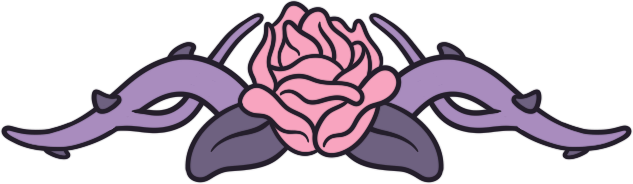

media kit 2026
twitch partner · iridescent dead by daylight creator · content creator

what's your favourite scary movie
who is georose?
georose is a twitch and tiktok live streamer and content creator for dead by daylight and other horror genre games, bringing spooky cosy vibes to an engaged, loyal community across multiple platforms
beyond dead by daylight, georose's creative outlet is in cosplay and sfx makeup, bringing horror gaming and movie characters to life in detailed, handcrafted looks that consistently perform strongly across tiktok and instagram
live stream schedule
monday to friday, 11:00 to 16:00 gmt

the numbers
live community
and audience
geographic reach
trusted by brands
georose has a successful record of authentic brand partnerships across gaming, lifestyle and charity sectors


let's collaborate
gaming publishers & peripherals · cosplay & sfx make up · lifestyle brands
hello@georose.xyzfor partnership enquiries, sponsorship opportunities, or any collaboration discussions, please reach out directly via email